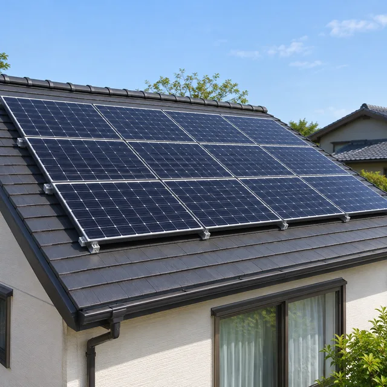
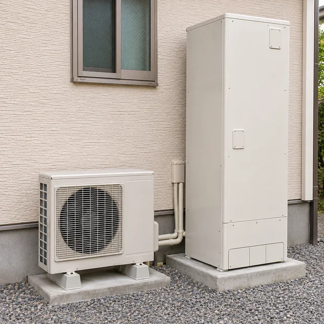
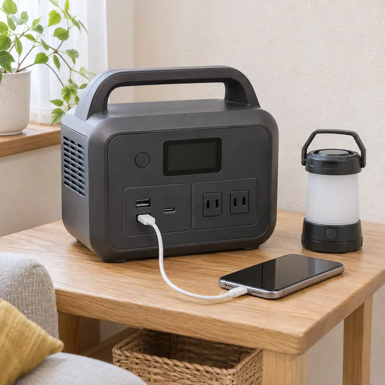

冬の夜、急に電気が消え、エアコンも止まったら。ライトを見つけてひと息ついたあとに気になるのは、「この寒さを、どうしのごう」ということではないでしょうか。
まず体の熱を逃がさず、電気がなくても使える暖房や防寒用品を組み合わせる。そのための道具と安全な使い方を、いまのうちに確かめておきましょう。カイロの予備やいつもの寝具など、身近なものから備えられます。
暖房が止まった日の寒さをしのぐ、道具と使い方
公開日：
 文｜エイスケ（住宅と教育の専門家）
文｜エイスケ（住宅と教育の専門家）

冬の夜、急に電気が消え、エアコンも止まったら。ライトを見つけてひと息ついたあとに気になるのは、「この寒さを、どうしのごう」ということではないでしょうか。
まず体の熱を逃がさず、電気がなくても使える暖房や防寒用品を組み合わせる。そのための道具と安全な使い方を、いまのうちに確かめておきましょう。カイロの予備やいつもの寝具など、身近なものから備えられます。
家の安全を確かめ、懐中電灯やLEDランタンで足元を照らします。電気ストーブなどの電熱器具はスイッチを切り、安全にできるものはプラグを抜いておきましょう。電気が突然戻ったときの火災を防ぐためです。
次に、上着・靴下・毛布を手元へ。乾いた衣類を重ね、首元や足元も包みます。家族で安全な一室に集まると、防寒用品をまとめやすく、お互いの様子にも気づけます。

床に座るなら、ラグやマット、敷布団を一枚。寝るときも、掛ける物だけでなく体と冷たい床の間に敷く物を用意します。夜はカーテンを閉め、使わない部屋の扉も閉めて、冷気を入りにくくしましょう。換気口や避難する通り道は、物でふさがずに空けておきます。
暖房を一台備えるなら、コンセント不要の石油ストーブや、屋内用のカセットガス暖房器具が候補になります。「灯油を使うから大丈夫」と思っていても、コンセントからの電気で動くファンヒーターは、停電すると止まります。家の機器の型番から説明書を探し、電源の要否を確かめましょう。
| 暖房の種類 | 備えるときに見るところ |
|---|---|
| 電源不要の石油ストーブ | 灯油と、機種に合った点火用の乾電池などを準備。手回しで点火する機種もあります。給油や燃料の保管場所まで考えて選びます。 |
| 屋内用のカセットガス暖房器具 | 指定のボンベ、暖房できる広さ、1本の燃焼時間を確認。小型機だけで広いリビングを暖めようとせず、過ごす場所に合った機種を選びます。 |
どちらも、カーテンや寝具から離して置けることと、換気ができることが前提です。集合住宅では、石油暖房や燃料の保管に決まりがないか、管理規約なども確認しておきましょう。
燃料は「何本あれば安心」と一律に決めず、説明書の燃焼時間を見て、一日に何時間使いたいかから見積もります。たとえば1本で約3時間使える機器を1日6時間、3日間使う想定なら、計算上は6本。これは説明用の例で、実際には機種・火力・気温で変わります。調理にも使う分は別に数えます。
使い捨てカイロは、電気も火も使わず体の一部を温められる備えです。予備を置き、使用期限も確認しておくと、寒い日にすぐ取り出せます。肌に直接当てず、同じ場所を長く温めないこと。寝るときは外してください。熱さに気づきにくい方や、自分で外せない方は特に注意が必要です。
夜に備えるなら、家族分の毛布・布団に加え、寒さに合う寝袋も選択肢です。湯たんぽは、安全にお湯を用意できるときに。明るく安定した場所で製品指定の温度・量を守って注ぎ、布団が暖まったら取り出してから寝ましょう。カバーで包んでも、長時間触れていると低温やけどのおそれがあります。
寒いと窓を閉め切りたくなりますが、燃料を燃やす暖房には換気が欠かせません。一酸化炭素は色もにおいもなく、気づかないうちに中毒を起こすおそれがあります。
燃焼器具の使用中に異変を感じたら、一酸化炭素中毒の可能性もあります。新鮮な空気のある安全な場所へ離れ、119番で救急を求めてください。
重ね着や寝具を使っても冷えがつらいときは、暖房のある場所へ移ることを早めに考えます。特に高齢の方や乳幼児、体調が悪い方がいる家庭では、停電の復旧を待ち続けず、親族宅や自治体の開設した避難所などへ連絡を。受け入れと暖房、移動経路の安全を確かめてから向かいましょう。
ふらつく、受け答えがおかしい、意識がはっきりしないなどの異変は、救急へ連絡するサインです。温度計の数字だけでなく、家族の様子も見ます。大雪などで外へ出ることが危険なら、自治体や消防へ支援を求めてください。
電気ストーブなどに落ちた布や紙が触れていないか、コードが傷んだり濡れたりしていないかを見ます。異常がある機器は使わず点検を相談しましょう。避難で家を離れる際は、安全に操作できる時間があればブレーカーを切っておくと、復電時の火災対策になります。
寒さ対策に加えて、お湯と連絡手段を確保できると心強いもの。今ある設備で何ができるかも見ておきましょう。

太陽光パネルで電気をつくり、住宅用蓄電池は電気をためておく設備です。停電時の運転への切り替え方と、使えるコンセント・機器を確認します。太陽光は夜間に発電できず、日中も天候で発電量が変わります。蓄電池にも残量・出力の限りがあるので、照明など優先したいものを決めておきましょう。

空気の熱を利用してお湯を沸かし、タンクにためる給湯設備です。断水せずタンクにお湯が残っていれば、停電中も蛇口などで使える機種があります。断水時は非常用取水栓から生活用水を取り出す方法も。やけどに注意し、自宅の機種の説明書で手順を確認します。飲み水は別に備えましょう。

スマホ用のモバイルバッテリーや、LED照明などに使えるポータブル電源を、ケーブルと一緒に準備。残量や接続を普段から確認します。電気毛布にも使うなら、電源の出力（W）・容量（Wh）と使用時間を確認。医療機器の電源は供給元や医療機関へ相談してください。
補足確認：三菱電機・停電時／断水時の処置、シャープ・自立運転の機種別条件、JVC・家庭内防災。
記事内の写真は、説明用の生成イメージです。「エコキュート」は関西電力株式会社の登録商標です。
暖房設備、給湯設備、凍結防止の仕組み、分電盤、非常用電源の切替設備
部屋・建材・設備から機能を確かめる ↗関連記事
この記事を書いた人｜エイスケ
1986年生まれ。実家の工務店・不動産に10年間従事したのち、教育の世界へ。住宅と教育、両方の視点から「豊かな暮らし」をテーマに執筆します。※本コラムは筆者個人の見解・経験に基づくものです。最終的な判断は各分野の専門家にご相談ください。